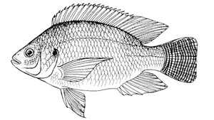

Alometry law for the Nile Tilapia

(image from Fishsource)
We use the alometry law $y = A x^B$ to correlate the length $x$ of the fish tilapia with its mass $y$. The following table for the length-weight relationship of growing-finishing cage-farmed Nile tilapia (Oreocromis niloticus)is provided in the article T. S. de Castro Silva, L. D. dos Santos, L. C. R. da Silva, M. Michelato, V. R. B. Furuya, W. M. Furuya, Length-weight relationship and prediction equations of body composition for growing-finishing cage-farmed Nile tilapia, R. Bras. Zootec. vol.44 no.4 Viçosa Apr. 2015):
| Days of culture | 1 | 20 | 40 | 60 | 80 | 100 |
|---|---|---|---|---|---|---|
| Mass (g) | 28.6 ± 4.2 | 88.6 ± 1.4 | 177.6 ± 3.6 | 313.8 ± 12.8 | 423.7 ± 12.7 | 774.4 ± 23.6 |
| Length (cm) | 10.9±0.4 | 15.3±0.4 | 19.1±0.2 | 22.8±0.5 | 26.3±0.6 | 31.3±0.4 |
We use Turing.jl with the compound model
\[ \begin{align*} A & \sim \mathrm{InverseGamma}(\alpha_A, \beta_A) \\ B & \sim \mathrm{InverseGamma}(\alpha_B, \beta_B) \\ \sigma^2 & \sim \mathrm{InverseGamma}(2, 1) \\ y & \sim \mathrm{Normal}(A x^B, \sigma^2) \end{align*}\]
with suitable hyperparameters $(\alpha_A, \beta_A)$ and $(\alpha_B, \beta_B)$ to be chosen shortly.
We start by loading the necessary packages:
using Distributions, Turing, StatsPlotsThen we collect the adimensionalized data in vector form and plot it for the fun of it:
xx = [10.9, 15.3, 19.1, 22.8, 26.3, 31.3]
yy = [28.6, 88.6, 177.6, 313.8, 423.7, 774.4]
scatter(xx, yy, xlabel="Body length (cm)", ylabel="Body weight (g)", xlims=(0.0, 35.0), ylims=(0.0, 1000.0), title="Length-weight relationship of growing-finishing cage-farmed Nile tilapia", titlefont=10, legend=nothing)We define the Turing.jl model with parameters $A$ and $B$ as Inverse Gamma functions with hyperparameters Ah = (Ah.α, Ah.β) and Bh=(Bh.α, Bh.β).
@model function alometry(x, q; Ah, Bh)
A ~ InverseGamma(Ah.α, Ah.β)
B ~ InverseGamma(Bh.α, Bh.β)
σ² ~ InverseGamma(2, 1)
σ = sqrt(σ²)
for i in eachindex(x)
y = A * x[i] ^ B
q[i] ~ Normal(y, σ)
end
endalometry (generic function with 2 methods)As in any nonlinear optimization problem, the starting point is crucial. Here, the starting point is our prior. The following prior does not work properly, as we can see.
model = alometry(xx, yy; Ah=(α=1,β=1), Bh=(α=1,β=1))
chain = sample(model, NUTS(0.65), 1_000)Chains MCMC chain (1000×17×1 Array{Float64, 3}):
Iterations = 501:1:1500
Number of chains = 1
Samples per chain = 1000
Wall duration = 5.14 seconds
Compute duration = 5.14 seconds
parameters = A, B, σ²
internals = n_steps, is_accept, acceptance_rate, log_density, hamiltonian_energy, hamiltonian_energy_error, max_hamiltonian_energy_error, tree_depth, numerical_error, step_size, nom_step_size, lp, logprior, loglikelihood
Use `describe(chains)` for summary statistics and quantiles.
plt = scatter(xx, yy, xlabel="Body length (cm)", ylabel="Body weight (g)", xlims=(0.0, 35.0), ylims=(0.0, 1000.0), title="Length-weight relationship of growing-finishing cage-farmed Nile tilapia", titlefont=10, legend=nothing)
xxx = range(0.9*first(xx), 1.1*last(xx), length=200)
yyy = mean(chain, :A) * xxx .^ mean(chain, :B)
plot!(plt, xxx, yyy)If we start with a more informative prior, we get a suitable result. If we pick two data points $(x_1, y_1)$ and $(x_2, y_2)$, assuming $y \approx Ax^B$, we have $y_2/y_1 = (x_2/x_1)^B$, so that
\[ B = \frac{\ln(y_2/y_1)}{\ln(x_2/x_1)}.\]
If we choose the second and third points, we get
B = log(yy[3]/yy[2])/log(xx[3]/xx[2])3.1347640575458167From that, we can also estimate $A$ from $A = y/x^B$, so that, choosing the second point
A = yy[2]/xx[2]^B0.017127958628527618With that in mind, we choose the hyperparameters for the prior as $(\alpha_A, \beta_A) = (57, 1)$, with mean $1/(57+1) \approx 0.017$, and $(\alpha_B, \beta_B) = (1, 6)$, with mean $6/(1+1) = 3.0$.
model = alometry(xx, yy; Ah=(α=57,β=1), Bh=(α=1,β=6))DynamicPPL.Model{typeof(Main.alometry), (:x, :q), (:Ah, :Bh), (), Tuple{Vector{Float64}, Vector{Float64}}, Tuple{@NamedTuple{α::Int64, β::Int64}, @NamedTuple{α::Int64, β::Int64}}, DynamicPPL.DefaultContext}(Main.alometry, (x = [10.9, 15.3, 19.1, 22.8, 26.3, 31.3], q = [28.6, 88.6, 177.6, 313.8, 423.7, 774.4]), (Ah = (α = 57, β = 1), Bh = (α = 1, β = 6)), DynamicPPL.DefaultContext())With this prior, we attempt again to fit the model.
# chain = sample(model, HMC(0.05, 10), 4_000) # HMC seems quite unstable here
chain = sample(model, NUTS(0.65), MCMCSerial(), 1000, 3; progress=false)Chains MCMC chain (1000×17×3 Array{Float64, 3}):
Iterations = 501:1:1500
Number of chains = 3
Samples per chain = 1000
Wall duration = 4.68 seconds
Compute duration = 4.47 seconds
parameters = A, B, σ²
internals = n_steps, is_accept, acceptance_rate, log_density, hamiltonian_energy, hamiltonian_energy_error, max_hamiltonian_energy_error, tree_depth, numerical_error, step_size, nom_step_size, lp, logprior, loglikelihood
Use `describe(chains)` for summary statistics and quantiles.
Here is the result of the chain.
plot(chain)Taking the mean of the parameters $A$ and $B$ we plot the fitted curve.
plt = scatter(xx, yy, xlabel="Body length (cm)", ylabel="Body weight (g)", xlims=(0.0, 35.0), ylims=(0.0, 1000.0), title="Length-weight relationship of growing-finishing cage-farmed Nile tilapia", titlefont=10, legend=nothing)
xxx = range(0.9*first(xx), 1.1*last(xx), length=200)
yyy = mean(chain, :A) * xxx .^ mean(chain, :B)
plot!(plt, xxx, yyy)
This seems successful. Now we compute the 95% credible interval
quantiles = reduce(
hcat,
quantile(
[
A * x^B for (A, B) in eachrow(view(chain.value.data, :, 1:2, 1))
],
[0.025, 0.975]
)
for x in xxx
)2×200 Matrix{Float64}:
19.8623 20.6656 21.491 22.3339 23.1838 … 970.215 980.92 991.704
22.9727 23.8628 24.7756 25.7032 26.6438 1059.27 1071.33 1083.47and plot it along the data:
plt = plot(xlabel="Body length (cm)", ylabel="Body weight (g)", xlims=(0.0, 35.0), ylims=(0.0, 1000.0), title="Length-weight relationship of growing-finishing cage-farmed Nile tilapia", titlefont=10, legend=nothing)
plot!(plt, xxx, yyy, ribbon=(yyy .- view(quantiles, 1, :), view(quantiles, 2, :) .- yyy), label="Bayesian fitted line", color=2)
scatter!(plt, xx, yy, color=1)We end this section plotting an ensemble of lines generated with the chain.
plt = plot(xlabel="Body length (cm)", ylabel="Body weight (g)", xlims=(0.0, 35.0), ylims=(0.0, 1000.0), title="Length-weight relationship of growing-finishing cage-farmed Nile tilapia", titlefont=10, legend=nothing)
plot!(plt, xxx, yyy, label="Bayesian fitted line", color=2)
for (a, b) in eachrow(view(chain.value.data, :, 1:2, 1))
plot!(plt, xxx, a .* xxx .^b, alpha=0.01, color=2, label=false)
end
scatter!(plt, xx, yy, color=1)